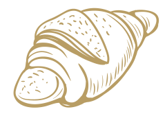

Conoce más Sobre CaféTime
Distintas variedades de cafés, tés, pasteles y postres, todo artesanal, hecho por nuestras manos, maestras del dulce. Ambiente acogedor, especial para disfrutar los mejores momentos. Tenemos una amplia carta, que siempre te sorprenderá.
-

Café
-

Postres
-

Té